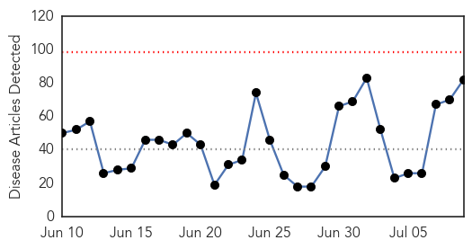

Ebola
30-Day Web Trend
0 alerts, 0 warnings

30-Day Twitter Trend
1 alerts, 0 warnings

Article Locations

Article Confidences

Top Articles:
- 1.000
- Liberia Confirms 2 More Ebola Cases, Bringing New Outbreak to 5
- 1.000
- Source of new Liberian Ebola outbreak a mystery
- 1.000
- Liberia announces two new Ebola cases
- 1.000
- Health Department
- 0.999
- Liberia announces two new Ebola cases
- 0.999
- Ebola crisis: Liberia’s new outbreak spreads
- 0.999
- Ebola eradication key: Parirenyatwa
- 0.999
- Liberia announces two new Ebola cases
- 0.999
- Lack of people, supplies and money plague Africa's Ebola
- 0.999
- Ebola recovery goals focus on rebuilding health systems
- 0.999
- Senegal closes border as "unprecedented" Ebola outbreak in Guinea spreads
- 0.999
- Death toll from Ebola in West Africa hits 887: WHO
- 0.999
- CDC commits to eliminating Ebola
- 0.999
- Ebola outbreak: Why has 'Big Pharma' failed deadly virus' victims?
- 0.998
- Ebola cases evade detection - lack of trust in communities
- 0.998
- With three new confirmed cases, Ebola officially returns to Liberia
- 0.997
- 16 test positive to Ebola in Guinea
- 0.997
- Doctor urges FG to take adequate precautionary measures against return of ebola
- 0.997
- Liberia records 2 new cases of disease amidst fears of another epidemic
- 0.996
- Lack Of People, Supplies And Money Plague Africa's Ebola Fight
- 0.996
- Ebola: Experts highlight problems in Sierra Leone
- 0.995
- Ebola-Hit Sierra Leone Extends Night-Time Curfew to 6am from 6pm Indefinitely
- 0.995
- Liberia announces two new Ebola cases
- 0.994
- Panel: Politics among reasons for botched UN Ebola response
- 0.993
- Panel: Politics among reasons for botched UN Ebola response
- 0.992
- WHO Not Fit To Deal With Global Health Emergencies, Says Independent Review Panel
- 0.992
- World Bank warns of rising maternal deaths post-Ebola
- 0.992
- Ebola: What my experience taught me (Opinion)
- 0.991
- Ebola panel urges sweeping changes at World Health Organisation
- 0.991
- Sierra Leone extends Ebola curfews indefinitely
- 0.990
- NJ Ebola Scare Confirmed To Be Malaria
- 0.990
- Details of US Ebola patient's route to Dalls from Liberia revealed
- 0.989
- New Ebola Infections Brings Number of Liberia Cases to 5
- 0.988
- WHO ‘unfit for health emergencies’
- 0.987
- Mugabe in New York for Ebola Summit
- 0.986
- Ebola Is Not Over and It's Proving Hard to Beat
- 0.985
- Obama says US military to help Ebola effort
- 0.980
- Source of new Liberian Ebola outbreak a mystery: WHO
- 0.975
- Stop Making Sense
- 0.972
- Dr. Yumkella Returns Home In 5 Weeks
- 0.970
- Ebola conference: Past recovery conferences show gloomy track record for disaster-hit countries - World
- 0.964
- West African Health Organisation Day observed
- 0.961
- Sierra Leone News : Health Minister Dr. Abu Bakarr Fofanah, appointed Founding Co-Chair of World Medicine Summit : Sierra Leone News
- 0.959
- The Great U.S. Polio Panic of 2015
- 0.952
- Loss Of Health Staff Could Increase Maternal Mortality In Ebola-Hit Countries: World Bank
- 0.951
- News in the Humanosphere: Maternal mortality rates to surge in Ebola-affected countries, says World Bank
- 0.951
- Experts Studied Ebola Response and Say World Health Organization Needs Major Reforms
- 0.945
- Ebola conference to generate funding and solidarity for West Africa
- 0.944
- Loss of health staff could increase maternal mortality in Ebola-hit countries: World Bank
- 0.944
- Loss of health staff could increase maternal mortality in Ebola-hit countries: World Bank
Showing top 50 articles...
Top Tweets:
- 0.981
- Undefeated By The Ebola Outbreak, Chid Liberty's Campaign Helps Liberia's ... - Madame Noire http://t.co/JPUpf1GZQ6 ebola EVD
- 0.967
- Ebola vaccine trials not harmful – Experts - GhanaWeb http://t.co/gAFjk6HeX6 ebola EVD
- 0.964
- 16 test positive to Ebola in Guinea - TheCable http://t.co/5OLk4rm3Jj ebola EVD
- 0.932
- Mugabe in New York for Ebola Summit - Nehanda Radio http://t.co/V33vi2Zo1V ebola EVD
- 0.903
- Lack of people, supplies and money plague Africa's Ebola fight: experts - Yahoo News http://t.co/6fJ2mod4js ebola EVD
- 0.871
- New Jersey Neighborhood Quarantined After Possible Ebola Patient Discovered ... - The Ocean Signal http://t.co/vK4MPOKCgk ebola EVD
- 0.871
- Liberia Finance Minister explains Ebola recovery plan aligns with pre-Ebola dev plans. @TackleEbola EbolaResponse
- 0.871
- La Banquemondiale prédit une flambée de mortalitématernelle après Ebola https://t.co/aI97a739yu via
- 0.865
- Some $3.2 billion needed for Ebola recovery efforts in Guinea, Liberia and ... - UN News Centre http://t.co/d9PrCOBV6w ebola EVD
- 0.857
- Learning from Ebola Virus: How to Prevent Future Epidemics lessonslearned http://t.co/LGYYOgApIP
- 0.847
- On the RoadtoZero, CDC staff reached remote parts of West Africa to help control the spread of Ebola. http://t.co/INVl2qQQnE
- 0.839
- Liberia Confirms 2 More Ebola Cases, Bringing New Outbreak to 5 - Bloomberg http://t.co/NVtWOYOB8S
- 0.819
- Refugee Union blasts Tsang for racist comments, likens ebola to SARS - Coconuts Hong Kong http://t.co/s7HKFQ7ztA ebola EVD
- 0.811
- Sierra Leone extends Ebola curfews indefinitely - Yahoo News http://t.co/OqZzX8Sw3w
- 0.724
- We are fighting Ebola for the whole world, not only the region - Dr. Walter Gwenigale, Liberia Health Minister EbolaResponse
- 0.705
- What It's Like To Fight Ebola When the World Stops Listening - TIME http://t.co/2Od3wIpVZ3 ebola EVD
- 0.700
- Child faces anxious wait in Melbourne's Royal Children's Hospital after ebola test - Herald Sun http://t.co/951l4kTC7M ebola EVD
- 0.679
- Increase in cumulative weekly Ebola cases in Guinea -> More in our latest situation report https://t.co/G37xyd0ZSG EbolaResponse
- 0.668
- Riposte Ebola. Dans le village ‘’cerclé’’ de Bamba Guinee http://t.co/5tRTkp7HlU
- 0.661
- Texas man who faked ebola gets probation - http://t.co/7FAYX2b9k3 http://t.co/mRnsEwkGva ebola EVD
- 0.634
- Ebola test negative for Melbourne child - http://t.co/VxCDJoj5yK http://t.co/zF3xHguzei ebola EVD
- 0.629
- La Grande Finale Africa Stop Ebola aura lieu le 29 juillet au Palais du peuple de Conakry ! Découvrez chaque jour... http://t.co/EV0b5SnAHS
- 0.618
- 9 July - news pouch on avianflu avianinfluenza Ebola EbolaResponse MERS is here: http://t.co/qvibe53nzI
- 0.606
- One of the weaknesses since the beginning of Ebola has been a lack of communication. -Guinea Minister of Health EbolaForum2015
- 0.591
- The Ebola outbreak is not over yet. The WHO EbolaResponse continues, until GettingtoZero http://t.co/paO4DGT2c6 http://t.co/fDy1jlGDSl
- 0.559
- La réponse de la Banquemondiale face à la crise Ebola : Données clés http://t.co/MQdgoD1roL
- 0.547
- Stay tuned from more live-tweeting from today's Ebola Forum! @PCIMediaImpact
- 0.547
- .@UNICEF begins distributing emergency supplies in affected communities as Ebola flares up in Liberia http://t.co/ii4asAWCBL
- 0.543
- Panel blames politics for botched UN Ebola response:... http://t.co/eUHzMdspGg
- 0.517
- So much tragedy in West Africa's Ebola outbreak, but this piece is huge & far reaching: loss of healthcare workers. http://t.co/ezmOOYMmeS
- 0.511
- Is Disease a Threat to International Security? ebola http://t.co/qbKG0OSjOy
Meningitis
30-Day Web Trend
3 alerts, 0 warnings

30-Day Twitter Trend
0 alerts, 0 warnings

Article Locations

Article Confidences

Top Articles:
- 0.971
- Quarantine rules for Haj pilgrims unveiled
- 0.962
- The Post
- 0.936
- Kabompo school meningitis outbreak mishandled
- 0.756
- Guidance on new meningitis vaccine leaves choice to parents; • Experts disagree on who should be able to receive the vaccine
- 0.717
- Hand, Foot and Mouth Disease
- 0.660
- Brain-Eating Amoebas Have Struck Again in Minnesota
- 0.639
- We need to early diagnose TB and treat with drugs that work
- 0.623
- DonutGate 2015: Ariana Grande's Donut-Licking Incident Was Gross, But Is It Really A Public Health Concern?
- 0.513
- Meningitis vaccination mandatory for Haj visa
Top Tweets:
-
No tweets found for Jul 09, 2015